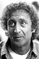

Country:United States, 106 minutes
Spoken languages:English, German
Genres:Comedy
Director(s):Mel Brooks
Writer(s):Gene Wilder, Mel Brooks
Video Codec:Unknown
Number: 766


Certification:PG
Storyline:
A young neurosurgeon inherits the castle of his grandfather, the famous Dr. Victor von Frankenstein. In the castle he finds a funny hunchback, a pretty lab assistant and the elderly housekeeper. Young Frankenstein believes that the work of his grandfather was delusional, but when he discovers the book where the mad doctor described his reanimation experiment, he suddenly changes his mind.
Cast: 

Medium: Original DVD,
Loaned: No
Aspect ratio: Unknown